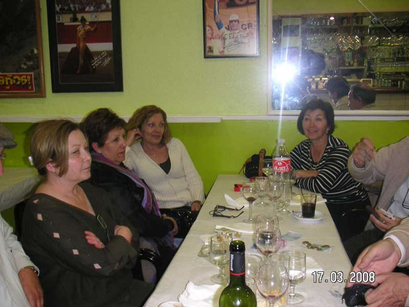

Encuentro en SantoñaAnterior | Inicio | Siguiente |
|
 La verdad es que el sitio lo encontramos de chiripa, pero muy bueno y la familia (dueños) muy bien. Hasta nos permitieron beber el vino que traía Carlos del Priorato.... ¡¡¡Ahí es ná...!!! |